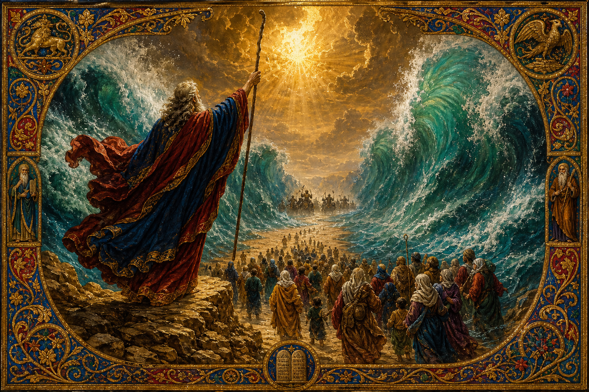

Old Testament · Book 2 of 39
Exodus
A people in chains hear their name called, and a God who keeps promises goes to war for them.
Genesis ends with a family in Egypt. Exodus begins four hundred years later with that family grown into a nation — and enslaved.
He did not forget them. He heard them groaning, and He came down.
What happens in Exodus
A baby hidden in a basket of reeds grows up in Pharaoh's own house, then flees into the desert as a fugitive shepherd — and it is there, at a bush that burns without being consumed, that God speaks his name and sends him back. What follows is a contest of power: nine plagues that humble the gods of Egypt one by one, a hardened heart that will not bend, and a final night when death itself passes over every house marked with the blood of a lamb. The sea splits, the people walk through on dry ground, and the army that enslaved them is swallowed by the water behind them. But freedom is only the first half of the book. At Mount Sinai, God does not just rescue his people — he gives them an identity, a moral law written in stone, and detailed instructions for a tabernacle where he himself will live among them. The book ends with that tent built exactly as commanded, and the glory of God filling it so completely that even Moses cannot enter.
Why it matters
Exodus is the book the rest of the Bible keeps looking back on. Every time Israel needs to remember who God is, they remember this: he is the One who brought them out of Egypt, out of the house of bondage. The Passover lamb, the blood on the doorframe, the pillar of cloud and fire, the law given to a free people rather than a condition for becoming free — these are not just ancient events but a pattern. Rescue first, relationship after. Exodus insists that God is not a distant force to be appeased but a Father who comes looking for his children and wants to live among them.
Jump to a chapter
Exodus has 40 chapters — select one to begin reading there.